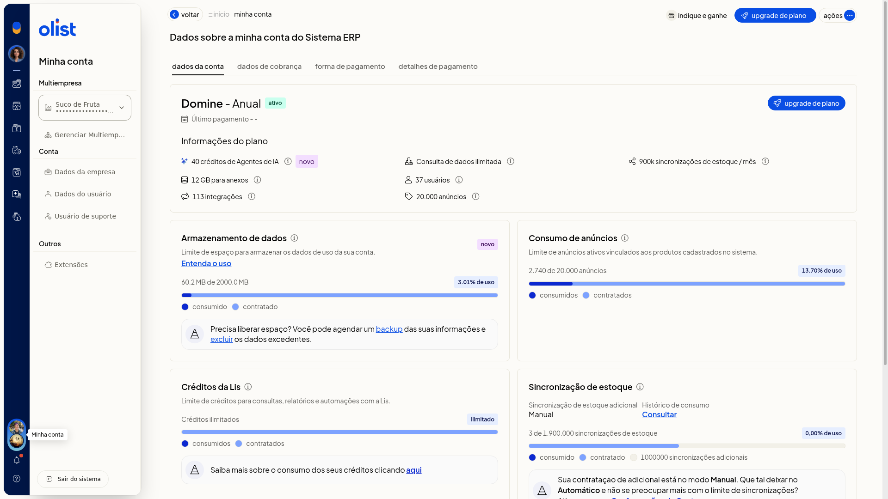

Multiempresa: operar entre empresas
Multiempresa reúne os CNPJs vinculados do grupo. No ERP da Olist, você usa o seletor em Minha conta para operar em outra empresa já vinculada.
Instruções
-
Clique no avatar da empresa no menu lateral para abrir Minha conta.

-
Expanda o seletor de empresa para ver as empresas vinculadas, com a empresa atual marcada.

-
Selecione a empresa vinculada em que deseja operar.